Imprese
Qualificare materiali e prodotti.
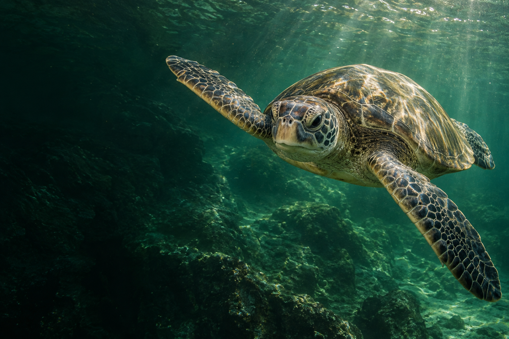
Il valore della materia non finisce al primo utilizzo. Con le linee certificate Plastica Seconda Vita portiamo il riciclo dentro il mondo dell’imballaggio.

Plastica Seconda Vita non resta un certificato in un cassetto: è stampato sul nastro che chiude i colli in partenza.
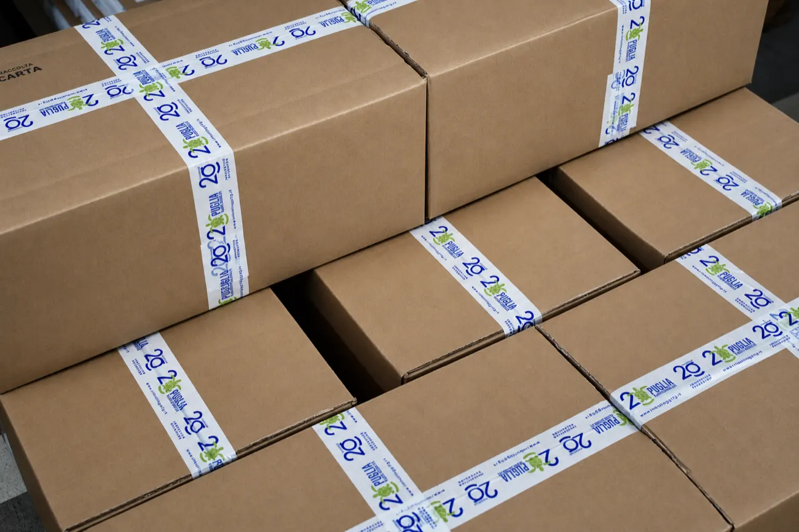
Progettare il packaging pensando anche al recupero della materia.
Considerare materiali e funzione.
Proteggere durante il percorso.
Restituire valore alla materia.
Plastica Seconda Vita certifica origine e contenuto riciclato secondo lo schema applicabile.
IPPR promuove l’impiego e la riconoscibilità delle plastiche da riciclo.
Qualificare materiali e prodotti.
Individuare soluzioni per gli acquisti verdi.
Riconoscere il contenuto riciclato.
Rispondere all’attenzione ambientale dei clienti.
Il riconoscimento Imballaggi 2G per i clienti che scelgono prodotti Plastica Seconda Vita.
Iniziativa aziendale, distinta dalla certificazione di prodotto IIP.
I CAM definiscono i criteri ambientali per gli acquisti pubblici.
La conformità CAM va verificata per ogni acquisto: la sola certificazione PSV non la garantisce.
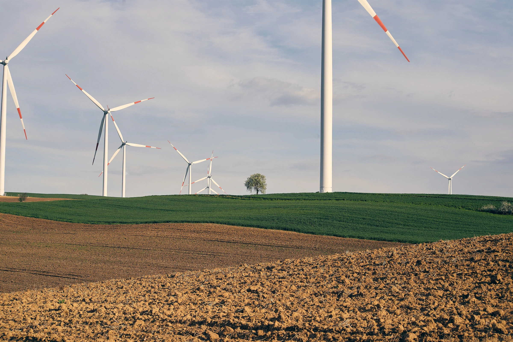
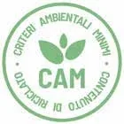
Le emissioni lungo il ciclo di vita, espresse in CO₂ equivalente.
Meno materia e ingombro. Il beneficio ambientale va misurato sul singolo prodotto.
Scopri ZerovirgolacinqueOgni specie contribuisce a un equilibrio da preservare.
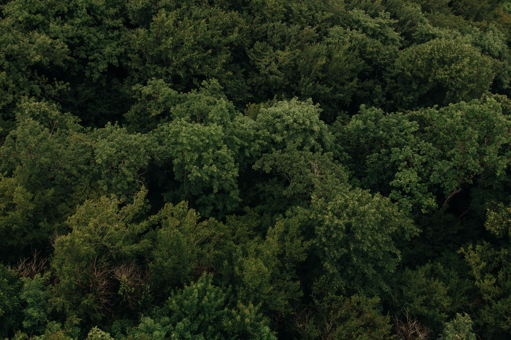
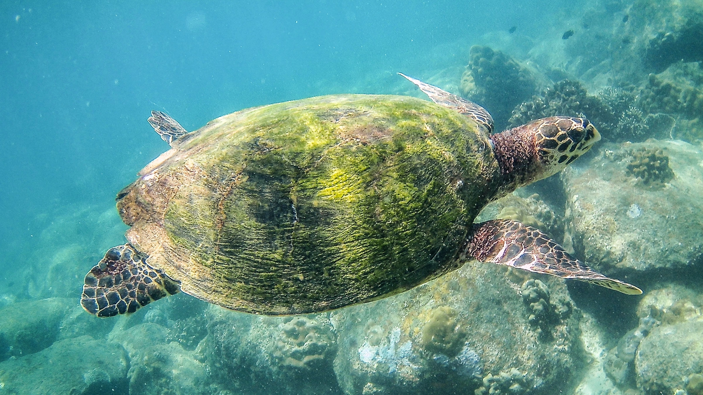
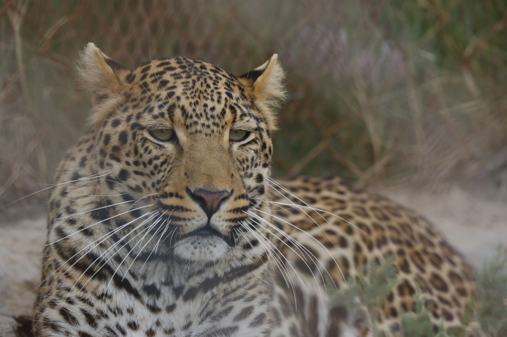
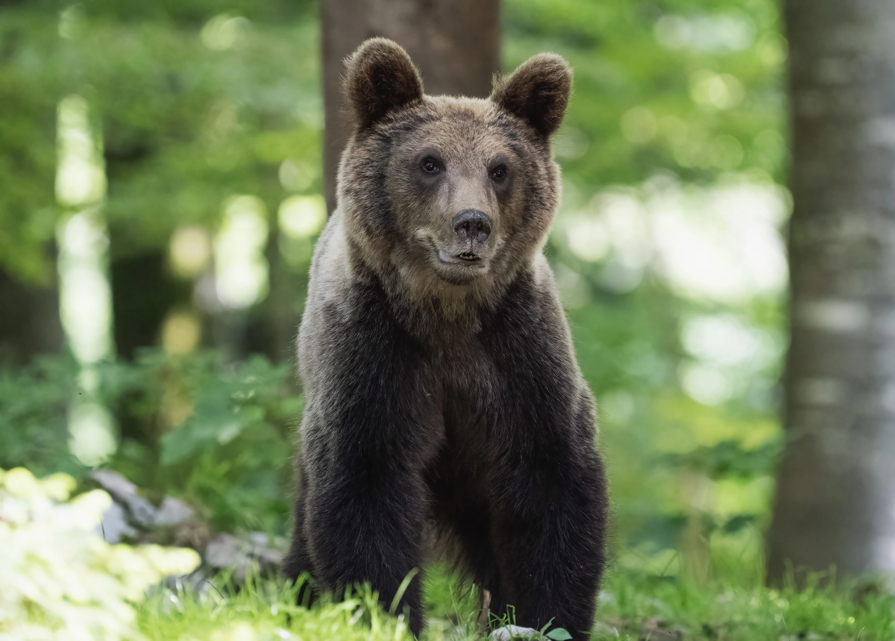
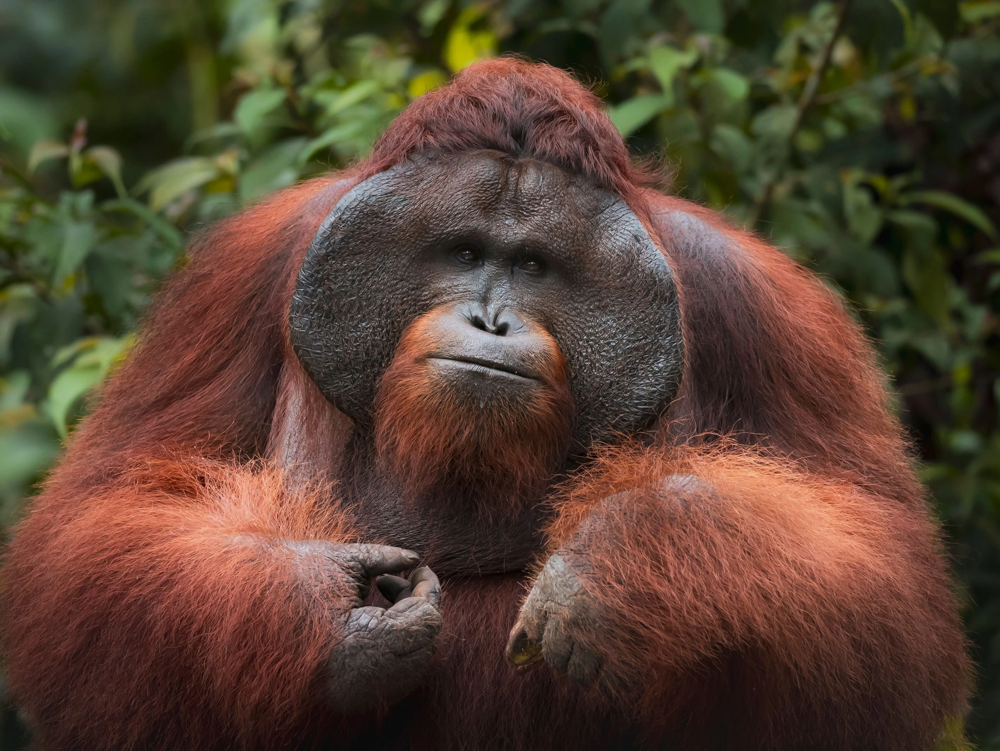
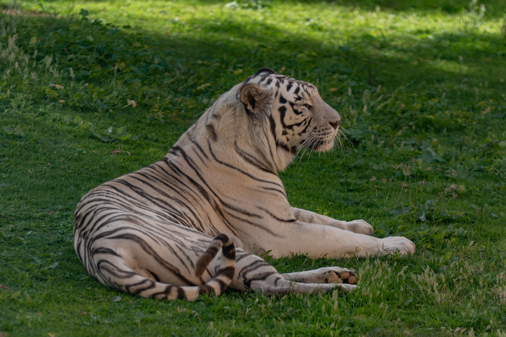
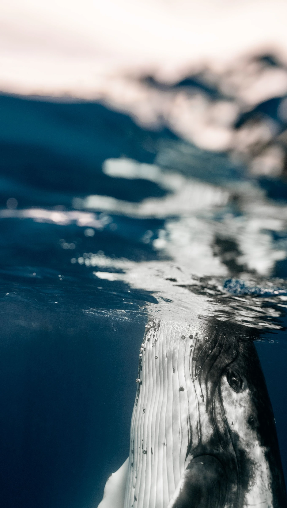
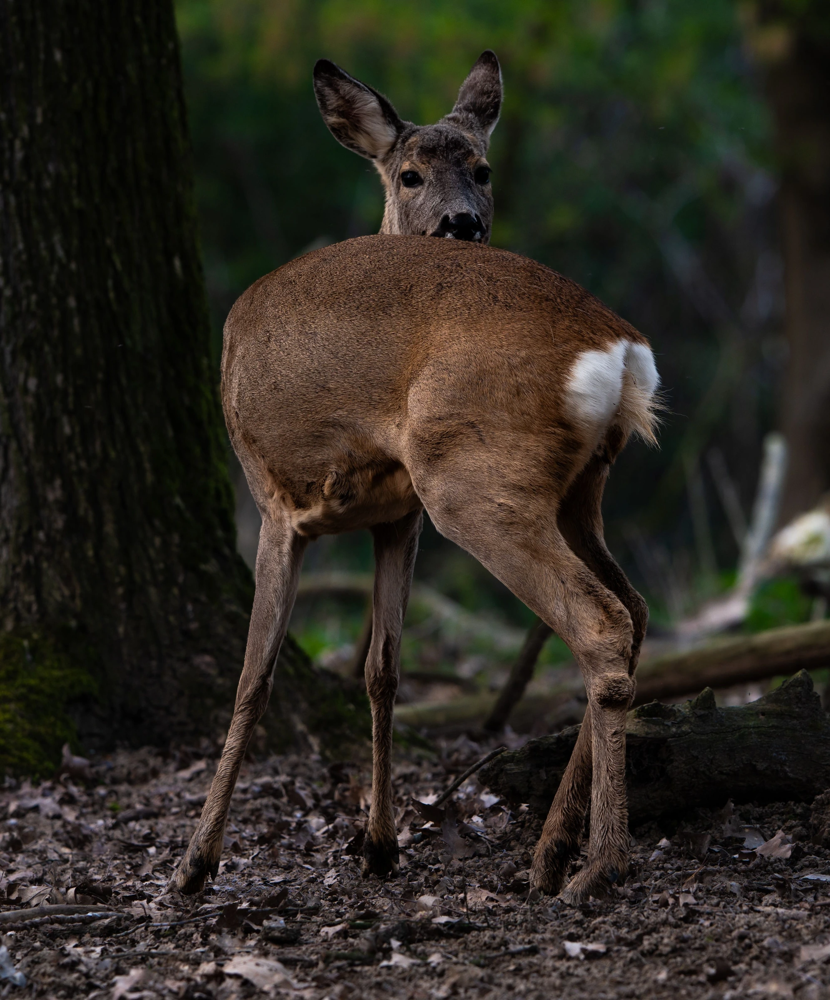
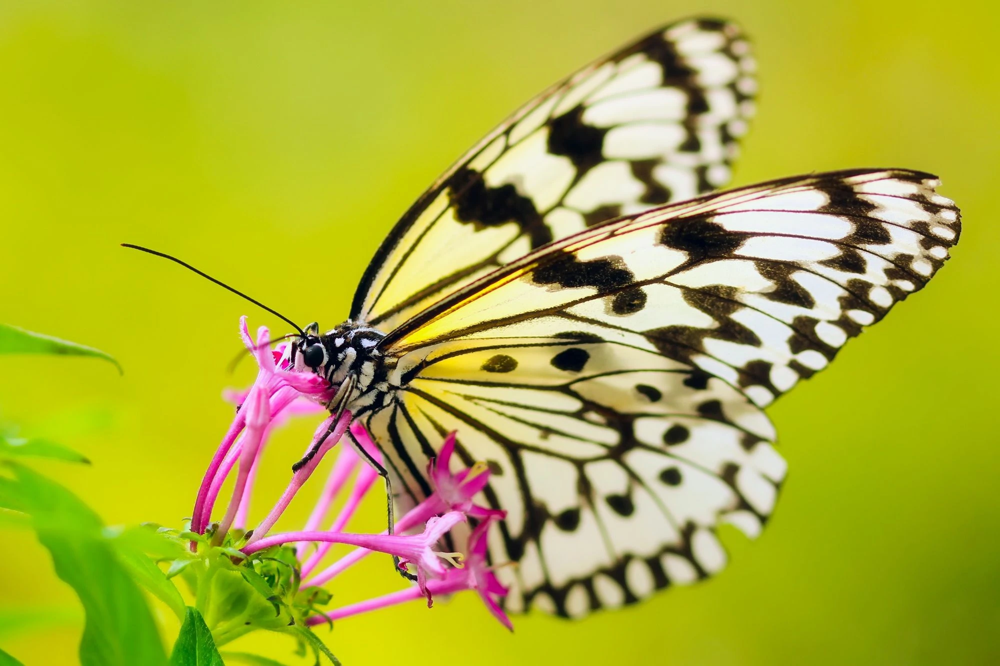
Fotografie di repertorio.
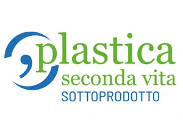
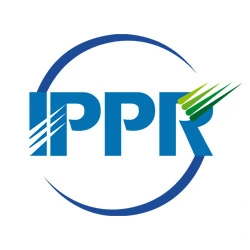
Commercializzazione di film in polietilene certificato PSV MixEco. Marchio con numero distintivo 5718; verifica e sorveglianza IIP.
Produzione di coprispalla, coprisedia, buste e fogli protettivi, mediante taglio e saldatura con MPS da sottoprodotto esterno.
Le scadenze sono quelle riportate nei documenti, salvo modifica, sospensione o revoca. La certificazione riguarda i prodotti nel relativo campo di applicazione.
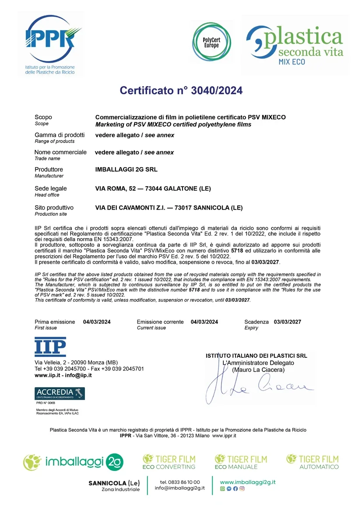